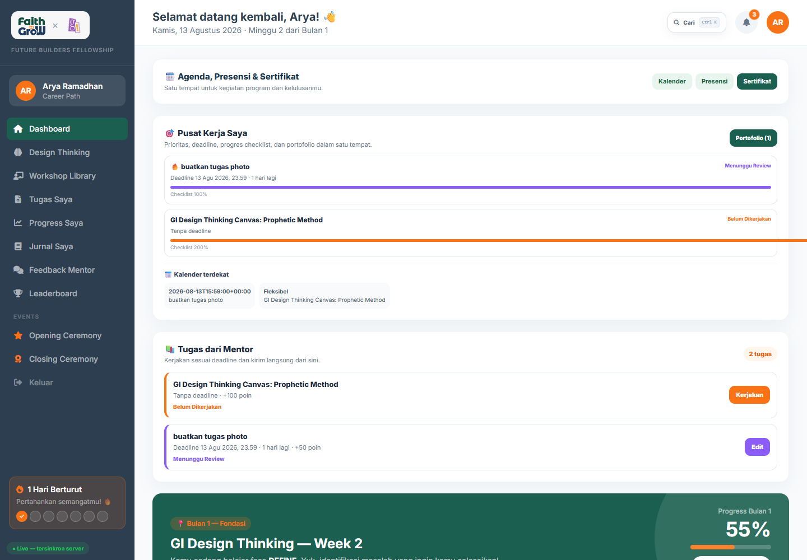
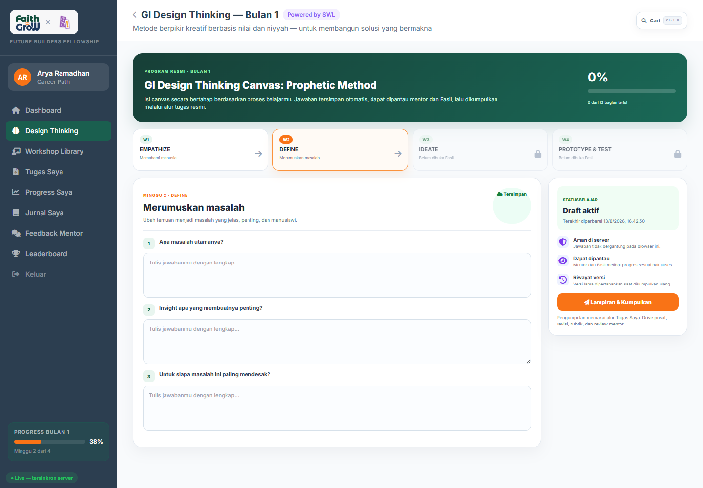
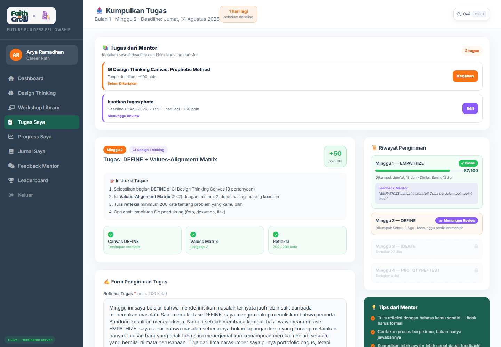
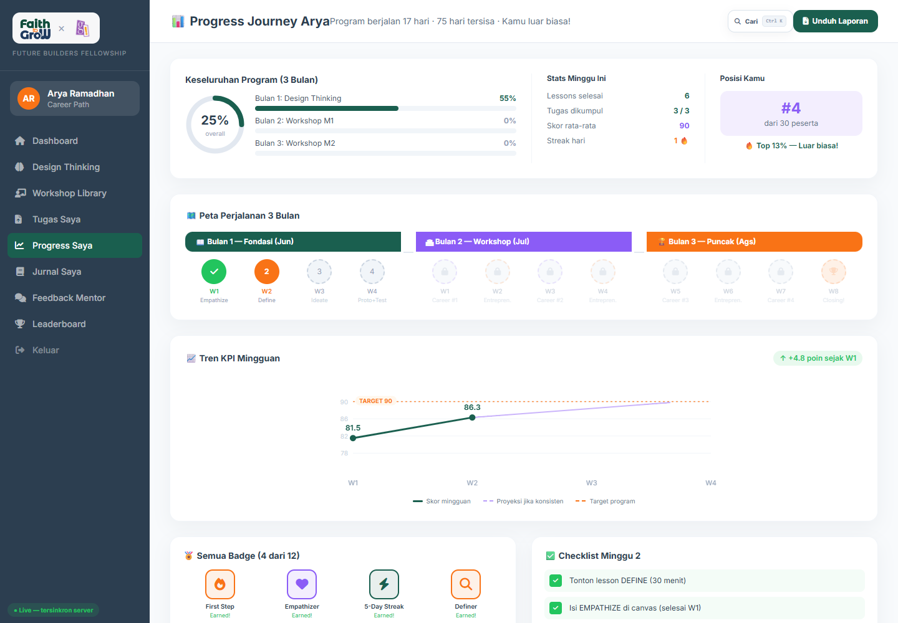
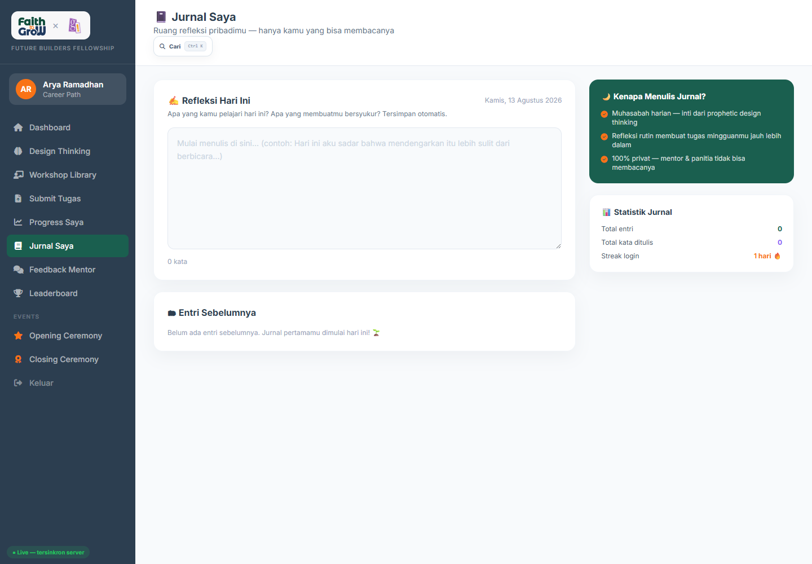
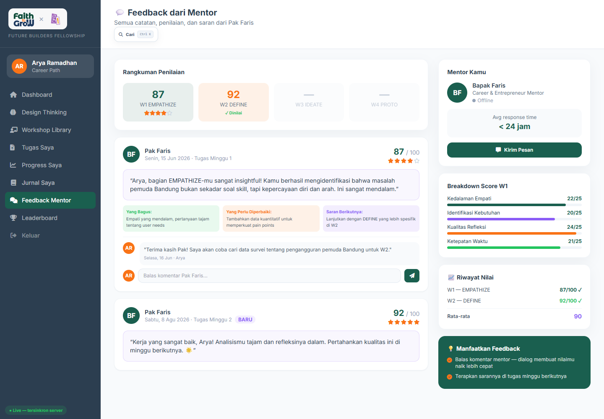
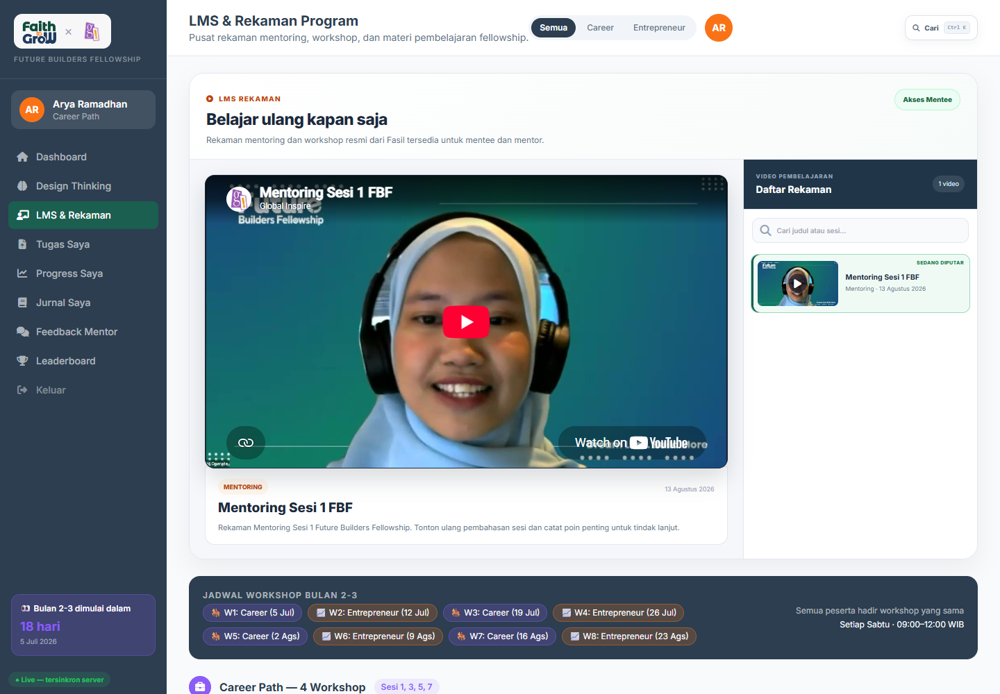
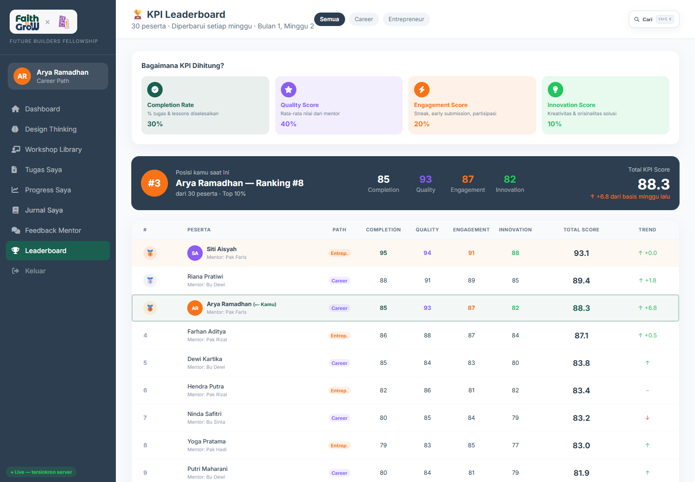

Faith to GroW × Global Inspire
FUTURE BUILDERS FELLOWSHIP 2026
Panduan Lengkap
Dashboard Mentee
Buku pegangan peserta untuk mengikuti pembelajaran, mengisi Canvas, menonton rekaman, mengerjakan dan mengunggah tugas, membaca feedback, melakukan revisi, serta memantau progres program.
1 dashboardsemua prioritas belajar
Autosaveprogres aman di server
Drive pusatlampiran tidak dibuat publik
Versi 1.0
Disusun dari dashboard produksi
13 Agustus 2026 · Asia/Makassar
Mulai di siniTujuan dan daftar isi
Panduan ini membantu Mentee menyelesaikan seluruh alur program dari satu akun. Gunakan platform sebagai tempat resmi untuk jawaban, lampiran, diskusi, feedback, dan riwayat tugas.
01Login dan profil
09Progress Saya
02Dashboard Mentee
10Jurnal Saya
03Rutinitas belajar
11Feedback Mentor
04Design Thinking Canvas
12LMS dan rekaman
05Tugas Saya
13Agenda, presensi, sertifikat
06Upload ke Drive pusat
14Leaderboard
07Status pengumpulan
15Troubleshooting
08Revisi dan riwayat versi
16Checklist Mentee
Login, pendaftaran Google, dan profil
Pilih Mentee→Login Google / Email→Isi Profil→Menunggu Fasil→Akun Aktif
- Pada halaman login, pastikan tab Mentee aktif.
- Masuk dengan akun FTG atau klik Lanjutkan dengan Google.
- Pengguna Google baru diminta melengkapi nama dan data profil.
- Setelah dikirim, tunggu persetujuan Fasil. Akun yang belum disetujui tidak dapat membuka dashboard.
- Setelah aktif, gunakan akun yang sama setiap kali login.
Akun Google boleh baru, tetapi identitas harus sesuai peserta resmi. Fasil dapat melihat provider login dan memblokir akun yang tidak dikenal.
Jaga keamanan akun. Jangan membagikan password, token, kode OTP, atau izin Google kepada teman maupun Mentor.
Jika lupa password
Isi email pada halaman login lalu klik Lupa password?. Gunakan tautan reset yang dikirim ke email. Fasil tidak dapat melihat password Anda.
02 · OrientasiMengenal Dashboard Mentee

Gambar 1. Dashboard produksi Mentee: prioritas, deadline, status tugas, agenda, dan progres.
Pusat Kerja SayaPrioritas, deadline, checklist, status tugas, dan portofolio.
AgendaKalender kegiatan, presensi, serta akses sertifikat.
Lanjut BelajarMembuka fase Design Thinking yang aktif.
Mulai dari bagian paling atas. Tugas dengan deadline terdekat atau status revisi harus dikerjakan sebelum melihat leaderboard atau badge.
03 · RutinitasSOP belajar harian dan mingguan
Setiap loginBaca notifikasi, deadline, dan status feedback.
Saat belajarIsi Canvas/jurnal secara bertahap dan pastikan autosave.
Sebelum deadlinePeriksa isi, lampiran Drive, lalu kumpulkan.
Urutan yang disarankan
- Buka Dashboard dan periksa Pusat Kerja Saya.
- Baca notifikasi baru pada ikon lonceng.
- Lanjutkan Design Thinking atau tugas dengan deadline terdekat.
- Pastikan indikator tersimpan otomatis muncul.
- Buka Tugas Saya, lengkapi checklist dan lampiran.
- Kumpulkan sebelum deadline; periksa status Menunggu Review.
- Jika Mentor meminta revisi, kerjakan versi baru sesuai feedback.
Kebiasaan yang membantu
- Jangan menunggu hari terakhir untuk mulai.
- Tulis dengan bahasa sendiri dan jelaskan proses berpikir.
- Gunakan link/lampiran yang dapat dibuka.
- Ajukan pertanyaan pada Diskusi Tugas jika instruksi belum jelas.
04 · PembelajaranGI Design Thinking Canvas

Gambar 2. Canvas mengikuti minggu dan fase yang dibuka oleh Fasil.
Cara mengisi
- Pilih minggu yang sudah terbuka.
- Baca niyyah, tujuan, dan setiap pertanyaan.
- Isi jawaban berdasarkan observasi, wawancara, dan refleksi Anda.
- Tunggu indikator autosave atau klik Simpan Progres bila tersedia.
- Lengkapi Values-Alignment Matrix dan komponen minggu tersebut.
- Klik Lampiran & Kumpulkan untuk masuk ke alur Tugas Saya.
Minggu terbuka otomatis mengikuti pengaturan Fasil. Jika W3/W4 masih terkunci, bukan berarti halaman rusak. Periksa tanggal atau pengumuman program.
Jangan menulis jawaban satu huruf atau asal. Mentor dan Fasil dapat memantau progres, isi, waktu aktivitas, serta riwayat versi sesuai hak akses.
05 · TugasTugas Saya dan riwayat pengiriman

Gambar 3. Tugas program dan tugas dari Mentor tampil pada halaman yang sama.
Tugas dari MentorJudul, deadline, poin, dan tombol Kerjakan/Edit.
Tugas programInstruksi, checklist Canvas/Matrix/Refleksi, serta KPI.
Form pengirimanJawaban, link, lampiran, diskusi, dan tombol kumpulkan.
RiwayatStatus minggu sebelumnya, skor, dan feedback Mentor.
Makna tombol
| Tombol | Arti |
|---|
| Kerjakan | Belum ada submission; buka form untuk mulai. |
| Edit | Draft atau submission masih dapat diperbarui sesuai status/deadline. |
| Simpan Draft | Menyimpan progres tanpa mengirim ke Mentor. |
| Kumpulkan Tugas | Membuat versi resmi dan mengirim notifikasi review. |
06 · LampiranUpload berkas ke Google Drive pusat
Semua lampiran resmi masuk ke Drive pusat FTG milik projectglobalinspire@gmail.com. Database hanya menyimpan metadata dan tautan, sehingga aplikasi tetap ringan.
Pilih File→Validasi→Upload Server→Drive Pusat→Akses Mentor
- Klik Pilih File dan pilih berkas yang benar.
- Tunggu nama berkas muncul pada formulir.
- Jangan menutup halaman saat indikator upload masih berjalan.
- Klik Kumpulkan/Perbarui Pengumpulan.
- Pastikan notifikasi menyatakan file terunggah dan status tugas berubah.
Aturan lampiran
- Gunakan nama file yang jelas, misalnya W2_Define_Nama.pdf.
- Periksa batas ukuran dan jenis file pada form.
- Jangan mengunggah password, KTP, atau data sensitif yang tidak diminta.
- File tidak dibuat publik; Mentor terkait mendapat hak baca/unduh.
“Akses mentor tertunda” berarti file sudah masuk Drive pusat, tetapi izin baca Mentor belum selesai. Pengumpulan tidak hilang; Fasil/Mentor perlu menyelesaikan koneksi Google.
07 · StatusMemahami status pengumpulan
| Status | Arti | Tindakan Anda |
|---|
| Belum dikerjakan | Belum ada jawaban/draft | Klik Kerjakan |
| Draft | Progres tersimpan, belum dikirim | Lengkapi lalu kumpulkan |
| Menunggu Review | Versi resmi sudah masuk | Tunggu Mentor; pantau notifikasi |
| Perlu Revisi | Mentor meminta perbaikan | Baca feedback dan unggah versi baru |
| Dinilai | Review selesai | Baca skor dan refleksikan feedback |
| Terlambat | Deadline lewat dan belum selesai | Segera hubungi Mentor/Fasil |
Sebelum menutup halaman
- Status di kartu tugas sudah berubah.
- Nama lampiran masih terlihat.
- Waktu pengumpulan muncul pada riwayat.
- Tidak ada pesan error yang belum ditangani.
Nama file muncul belum selalu berarti sudah terkirim. Pengumpulan resmi selesai setelah tombol Kumpulkan berhasil dan status berubah menjadi Menunggu Review.
08 · RevisiMengirim versi baru tanpa kehilangan versi lama
Versi 1→Feedback→Perlu Revisi→Versi 2→Dinilai
- Buka notifikasi permintaan revisi.
- Baca feedback, skor rubrik, dan bagian yang harus diperbaiki.
- Buka Riwayat versi & feedback untuk melihat submission sebelumnya.
- Edit jawaban/link dan pilih lampiran baru bila diperlukan.
- Klik Perbarui Pengumpulan.
- Pastikan versi baru tercatat dan status kembali Menunggu Review.
Versi lama tetap tersimpan bersama feedback sebelumnya. Riwayat ini menunjukkan perkembangan belajar dan mencegah perubahan tanpa jejak.
Jika ingin menghapus lampiran aktif
Klik tanda × pada chip nama berkas. Sistem akan memperbarui metadata dan menghapus berkas terkait dari Drive pusat sesuai aturan aplikasi. Pastikan Anda benar-benar memilih file yang tepat sebelum mengonfirmasi.
Jangan menghapus berkas hanya untuk menyembunyikan kesalahan. Riwayat versi dan audit tetap dipertahankan.
09 · PerkembanganProgress Saya

Gambar 4. Perjalanan program, KPI, badge, dan checklist mingguan.
Progress keseluruhanRingkasan fase dan penyelesaian aktivitas.
KPICompletion, quality, engagement, serta attendance.
BadgePengakuan atas milestone; bukan pengganti kualitas belajar.
Gunakan progres sebagai alat refleksi. Jika nilai atau completion menurun, buka feedback Mentor dan tentukan satu tindakan perbaikan untuk minggu berikutnya.
10 · RefleksiJurnal Saya

Gambar 5. Jurnal pribadi dengan autosave dan daftar entri.
- Buka Jurnal Saya setelah kegiatan atau sesi mentoring.
- Tulis apa yang dipelajari, dirasakan, dan akan dilakukan.
- Tunggu indikator tersimpan otomatis.
- Gunakan daftar entri untuk melihat pola perkembangan.
Format refleksi sederhana
Apa yang terjadi?Fakta dan pengalaman utama.
Apa maknanya?Insight, nilai, dan perubahan cara pandang.
Apa berikutnya?Satu tindakan konkret dan batas waktu.
Jurnal bukan tempat menyimpan password atau data rahasia. Tulis seperlunya dan hormati privasi orang yang disebut.
11 · FeedbackMembaca dan menanggapi Feedback Mentor

Gambar 6. Nilai, catatan Mentor, dan area balasan.
- Baca skor keseluruhan dan setiap bagian penilaian.
- Catat kekuatan yang perlu dipertahankan.
- Ubah saran Mentor menjadi langkah perbaikan.
- Gunakan kolom balasan jika membutuhkan klarifikasi.
- Jika status Perlu Revisi, kembali ke Tugas Saya dan kirim versi baru.
Feedback bukan hukuman. Fokus pada bukti dan langkah perbaikan. Jika ada kesalahpahaman, tanyakan dengan sopan dan jelaskan konteks pekerjaan Anda.
12 · LMSWorkshop Library dan rekaman

Gambar 7. Video resmi program yang diterbitkan Fasil.
- Gunakan filter Semua, Career, atau Entrepreneur.
- Klik video untuk menonton langsung di halaman.
- Catat insight penting pada jurnal atau tugas terkait.
- Rekaman baru hanya dapat diterbitkan oleh Fasil.
Jika video terus menampilkan loading: tunggu beberapa detik, muat ulang sekali, periksa koneksi, lalu buka YouTube dari tautan yang tersedia. Jangan menekan tombol berulang-ulang.
13 · ProgramKalender, presensi, dan sertifikat
KalenderDeadline, workshop, mentoring, opening, dan closing ceremony.
PresensiCheck-in pada sesi yang aktif menggunakan QR resmi.
SertifikatTersedia hanya setelah syarat kelulusan terpenuhi.
NotifikasiPengingat agenda dan perubahan jadwal.
Presensi kegiatan
- Scan QR saat kegiatan dan dalam waktu presensi aktif.
- Login dengan akun Mentee sendiri.
- Pastikan konfirmasi kehadiran berhasil.
- Jika ada kendala teknis, laporkan saat kegiatan berlangsung.
Syarat sertifikat
- Status kepesertaan aktif.
- Persentase kehadiran minimum terpenuhi.
- Tugas wajib selesai.
- Nilai/kualitas minimum terpenuhi.
- Tidak ada review atau revisi wajib yang tertunda.
Jangan menitip presensi. Riwayat kehadiran terhubung dengan peringatan, akun terkunci, status gugur, dan kelayakan sertifikat.
14 · PeringkatLeaderboard secara sehat

Gambar 8. Peringkat berdasarkan KPI program yang tersinkron.
Apa yang memengaruhi posisi?
- Penyelesaian tugas dan aktivitas wajib.
- Kualitas hasil berdasarkan penilaian Mentor.
- Ketepatan waktu dan engagement.
- Kehadiran sesuai kebijakan program.
Tujuan leaderboard adalah motivasi, bukan membandingkan harga diri. Prioritaskan perkembangan dari minggu sebelumnya dan kualitas kontribusi Anda.
Jika nama atau angka berubah saat halaman dibuka: tunggu sinkronisasi selesai. Jika tetap tidak sesuai, laporkan kepada Fasil dengan screenshot dan waktu kejadian.
15 · BantuanTroubleshooting cepat
| Masalah | Tindakan |
|---|
| Tidak bisa login | Pastikan tab Mentee, email benar, akun aktif; gunakan reset password bila perlu. |
| Masih menunggu persetujuan | Pastikan profil sudah lengkap lalu hubungi Fasil. |
| Minggu terkunci | Periksa jadwal; akses dibuka oleh Fasil. |
| Progres tidak tersimpan | Tunggu indikator autosave, periksa koneksi, lalu muat ulang. |
| File gagal diunggah | Periksa ukuran/format dan koneksi; pilih ulang file dan tunggu sampai selesai. |
| Akses Mentor tertunda | File sudah di Drive pusat; laporkan nama tugas agar koneksi Mentor diperiksa. |
| Status tidak berubah | Periksa riwayat pengiriman; jangan mengirim berulang sebelum memastikan. |
| Video terus loading | Muat ulang sekali atau buka tautan YouTube. |
Saat meminta bantuan, kirim
- Nama akun dan judul tugas/halaman.
- Waktu kejadian.
- Tindakan terakhir sebelum error.
- Screenshot pesan error.
Jangan kirim password, token Google, OTP, API key, atau screenshot URL yang berisi access token.
16 · ChecklistChecklist Mentee sebelum minggu ditutup
Akun
- Login memakai akun sendiri.
- Nama dan profil benar.
- Notifikasi sudah dibaca.
Canvas
- Semua pertanyaan terisi.
- Jawaban bukan sekadar satu kalimat.
- Autosave berhasil.
- Matrix/refleksi lengkap.
Tugas
- Instruksi dibaca seluruhnya.
- Checklist 100%.
- Link dapat dibuka.
- Lampiran benar.
- Status Menunggu Review.
Revisi
- Feedback dibaca.
- Perbaikan sesuai permintaan.
- Versi baru sudah terkirim.
Program
- Agenda berikutnya diketahui.
- Presensi sudah tercatat.
- Rekaman penting ditonton.
- Jurnal refleksi terisi.
Keamanan
- Password tidak dibagikan.
- File sensitif tidak diunggah.
- Error dilaporkan tanpa token.
Prinsip Mentee: mulai lebih awal, simpan progres, kumpulkan dengan bukti yang benar, dan gunakan feedback untuk versi berikutnya.
Faith to GroW × Global Inspire
Future Builders Fellowship 2026